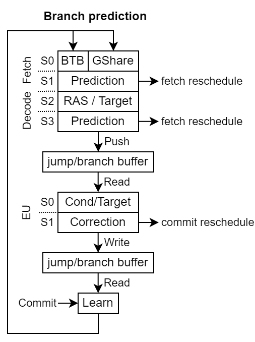

Branch prediction¶
Currently the branch prediction is implemented at two places in the pipeline :
Fetch prediction : Which is composed of the BTB and GShare predictors
Decode prediction : Which can use the RAS prediction, and in the case there was no BTB prediction it can do static jumps and gshare branch predictions
Here is an illustration of the branch prediction pipeline :
Fetch prediction¶
In the fetch stages, the BTB predicts a few things for a given fetch word : - The target PC - The nature of the instruction (if it is a branch or not) - Which slice of the word is the last part of the instruction (a slice is 4 byte without RVC, 2 bytes with RVC)
Using that prediction, and eventually using the GShare prediction, it will apply a prediction.
Decode prediction¶
As the instruction is fetched, there is quite a bit more information which can be used to improve the prediction at that stage.
If the fetch BTB prediction didn’t take the jump/branch then the decode prediction may :
Do nothing
Apply a static jump (call, j)
Apply a branch for which there was a GShare prediction
Apply the RAS prediction if the instruction is a return (ret)
If the fetch BTB took a jump/branch then the decode prediction may :
Undo the jump/branch if the instruction wasn’t a jump/branch
Correct the prediction if the RAS provides another value
Assume the prediction target was correct (calculating the branch target and then comparing it to the predicted PC is too much combinatorial path)
Then the result of the prediction is stored into a jump/branch circular buffer which will later be used by the execute units branch logic for an eventual correction.
The RAS heal its pointer on reschedules, but will not heal any speculatively updated value.
Jump/branch circular buffer¶
Push During the decode prediction
Read During the execute units branch execution to eventually correct a mispredicted branch
Pop After the instruction commit, which also triggers the branch predictors learning